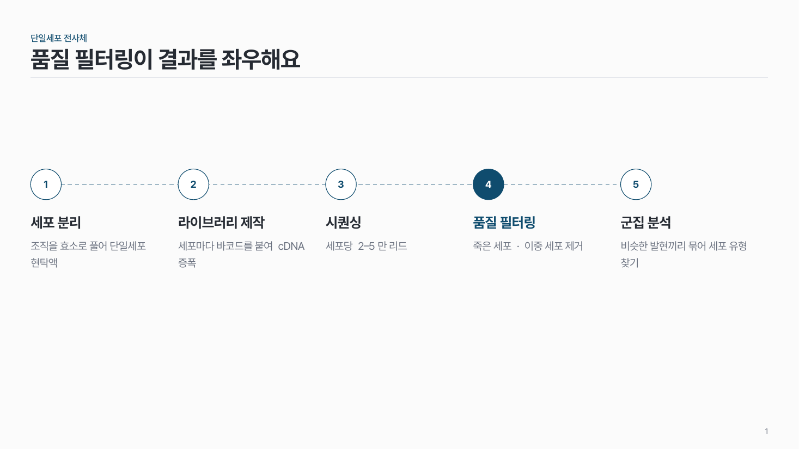
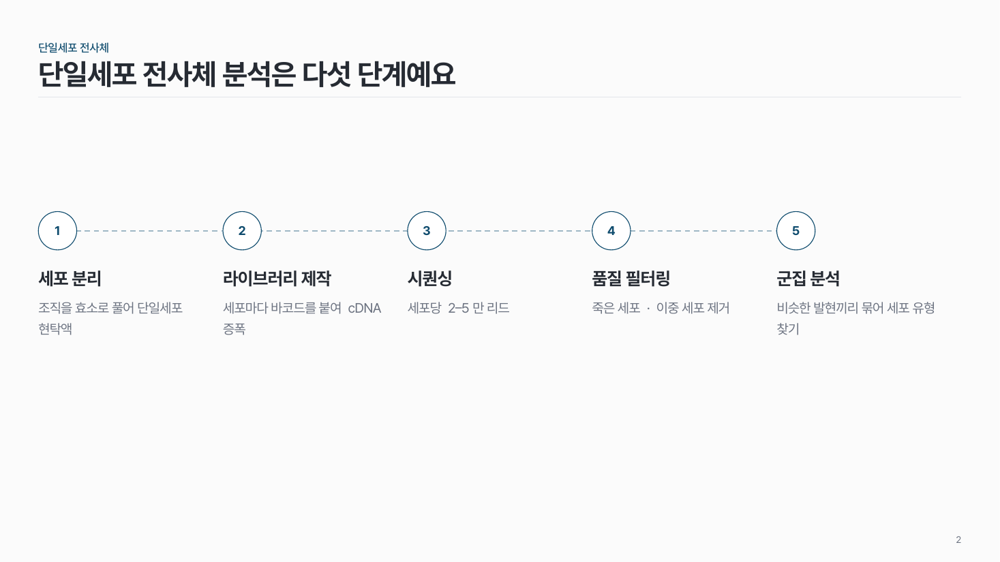
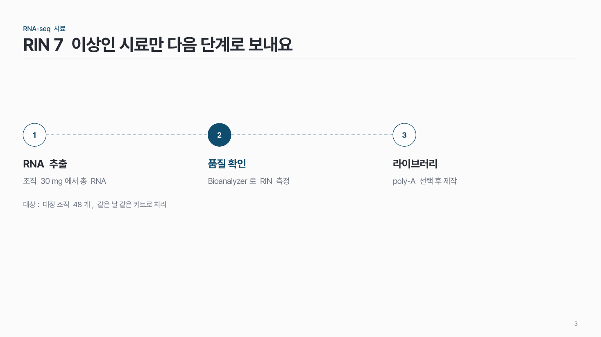
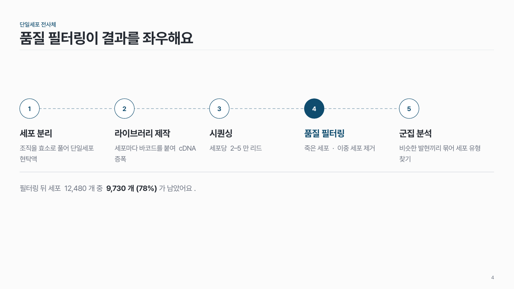

원 + 점선 단계 flow-01
번호 원을 점선으로 잇고, 원 아래에 단계 이름과 짧은 설명을 써요.

이 시안
5단계 · 핵심 단계 하나 강조
슬라이드 제목: 품질 필터링이 결과를 좌우해요
언제 쓰나
순서가 정해진 절차를 3–5단계로 보여 줄 때요. 단계마다 입력과 결과가 이어지는 실험·분석 과정에 잘 맞아요.
이럴 땐 다른 패턴
- 단계 이름이 아주 짧고 설명이 거의 없으면 쉐브론 단계
- 단계마다 도구·입력·출력을 적어야 하면 단계별 열 + 알약
- 끝나면 처음으로 돌아가면 순환 링
구성
- 본문을 단계 수만큼 같은 폭의 칸으로 나눠요.
- 칸마다 위쪽에 번호 원을 놓아요.
- 원 중심을 지나는 점선 하나를 원 뒤로 가로로 그어요.
- 원 아래에 단계 이름, 그 아래에 설명을 써요.
- 결론이 있으면 맨 아래에 한 줄로 따로 둬요.
지킬 것
- 단계는 3–5개.
- 단계 이름은 8자 안팎, 설명은 25자 안팎.
- 번호 원은 모두 같은 크기. 핵심 단계 하나만 원을 채워요.
- 단계 칸의 폭과 간격은 모두 같게.
하지 말 것
- 단계 사이마다 큰 화살표를 넣지 않아요. 번호가 순서를 말해 줘요.
- 6단계 이상을 한 줄에 억지로 넣지 않아요.
- 단계마다 아이콘과 다른 색을 쓰지 않아요.
PowerPoint에서
점선은 원보다 먼저 그리거나 '맨 뒤로 보내기'로 원 뒤에 둬요. 원을 하나 만든 뒤 Ctrl+D로 복제하면 간격이 같게 유지돼요.
더 볼 게시물 Instagram @peedori_
시안 비교
같은 내용을 옵션만 바꿔 그렸어요. 그림을 누르면 크게 보여요.
A5단계 · 핵심 단계 하나 강조
슬라이드 제목: 품질 필터링이 결과를 좌우해요

B같은 내용 → 강조 없음
슬라이드 제목: 단일세포 전사체 분석은 다섯 단계예요

C3단계 · 아래 작은 메모
슬라이드 제목: RIN 7 이상인 시료만 다음 단계로 보내요

D5단계 + 아래 결론 줄
슬라이드 제목: 품질 필터링이 결과를 좌우해요